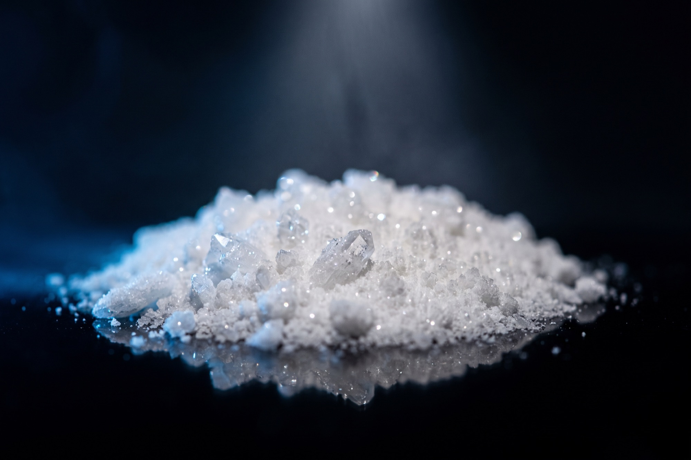

Lernen
Peptid 1x1
Die Grundlagen für den Einstieg: was ein Peptid ist, was RUO bedeutet und worauf du bei Reinheit, CoA und Anbietern achtest.

Was Peptide sind
Ein Peptid ist eine kurze Kette aus Aminosäuren, verbunden über eine Peptidbindung. Die Länge entscheidet über die Einordnung: Zwei Aminosäuren ergeben ein Dipeptid, bis zu etwa 50 ein Polypeptid. Ab mehr als 50 Aminosäuren und einer festen dreidimensionalen Struktur sprechen Forscher von einem Protein. Peptide sind also die kleinere, oft noch ungefaltete Vorstufe auf derselben Skala. Davon zu unterscheiden sind kleine Moleküle: Substanzen ohne Aminosäurekette, chemisch anders aufgebaut und meist deutlich leichter. Diese drei Kategorien, Aminosäure, Peptid, Protein, bilden das Grundgerüst, mit dem die gesamte Forschung an diesen Molekülen arbeitet.
Forschungschemikalien und der Rechtsrahmen
Die meisten Peptide auf dieser Seite tragen die Kennzeichnung RUO, research use only. Das bedeutet: Der Hersteller stellt sie ausschließlich für Labor- und Forschungszwecke her, nicht als Arzneimittel und nicht zur Anwendung am Menschen. In Deutschland und der EU sind diese Substanzen entsprechend nicht als Medikament zugelassen, eine pharmazeutische Prüfung wie bei zugelassenen Wirkstoffen hat nicht stattgefunden. Seriöse Anbieter machen das sichtbar: RUO-Hinweis auf jeder Produktseite, kein Verkauf an Minderjährige, ein vollständiges Impressum. Peptide Compass listet ausschließlich Anbieter mit Altersgate ab 18 Jahren und ohne Heilversprechen auf der Shop-Seite, das prüfen wir als Teil unserer Methodik.
Reinheit verstehen
Reinheit ist die zentrale Qualitätskennzahl bei Peptiden und wird meist per HPLC ermittelt, einer Analysemethode, die die Bestandteile einer Probe auftrennt und ihren Anteil misst. Eine Angabe von 98 % Reinheit bedeutet: 98 % der gemessenen Substanz entsprechen dem erwarteten Peptid, der Rest sind Verunreinigungen oder Abbauprodukte. Wichtig ist der Unterschied zwischen Reinheit und Identität. Reinheit sagt, wie sauber eine Probe ist, Identität sagt, ob es überhaupt das richtige Molekül ist. Für die Identität kommt oft LC-MS zum Einsatz, eine Kombination aus Flüssigchromatographie und Massenspektrometrie, die das Molekulargewicht bestätigt. Ein hoher Reinheitswert ohne Identitätsnachweis sagt am Ende wenig aus, beides gehört zusammen.
Was ein CoA ist
Ein CoA, Certificate of Analysis, ist der Prüfbericht zu einer bestimmten Charge. Fünf Angaben lohnen einen zweiten Blick. Die Chargennummer muss zum Produkt passen, das du in der Hand hast. Der Name des Labors zeigt, ob unabhängig getestet wurde oder shop-intern. Das Prüfdatum sagt, wie aktuell der Bericht ist, ein CoA von vor zwei Jahren sagt nichts über die aktuelle Charge. Der Endotoxin-Wert misst bakterielle Rückstände aus der Herstellung, ein niedriger Wert spricht für eine saubere Produktion. Die Schwermetall-Werte (Blei, Arsen, Cadmium) zeigen, ob Rückstände aus dem Herstellungsprozess in der Probe stecken. Fehlen diese Angaben komplett, ist das selbst schon eine Information.
Externe vs. interne Labore
Ein CoA kann von zwei Seiten kommen. Interne Tests führt der Anbieter selbst durch oder lässt sie im eigenen Auftrag ohne unabhängige Kontrolle erstellen. Externe Tests kommen von einem Labor, das keine geschäftliche Beziehung zum Hersteller hat und die Probe unabhängig prüft. Der Unterschied liegt im Anreiz: Ein unabhängiges Labor hat kein Interesse an einem bestimmten Ergebnis. In der Szene taucht dabei häufig der Name Janoshik auf, ein slowakisches Labor, das viele Anbieter für externe Prüfungen nennen. Das ist keine Empfehlung unsererseits, nur eine Einordnung: Wenn ein CoA ein externes Labor nennt, lohnt sich ein Blick, ob der Name überhaupt nachprüfbar existiert.
Chargen und Rückverfolgbarkeit
Jede seriöse Produktion vergibt eine Chargennummer, meist aufgedruckt auf dem Vial-Etikett. Sie verbindet ein einzelnes Fläschchen mit einem bestimmten Herstellungslauf und dem dazugehörigen CoA. Damit lässt sich im Zweifel zurückverfolgen, wann und mit welchem Ergebnis eine Charge geprüft wurde. Ohne Chargennummer ist ein CoA wertlos, du kannst nicht mehr zuordnen, ob der Prüfbericht überhaupt zu deinem Produkt gehört. Mit unserem Chargen-Check kannst du eine Chargennummer gegen die von uns erfassten CoAs abgleichen und siehst auf einen Blick, ob eine Prüfung dazu vorliegt.
Lagerung und Haltbarkeit
Die meisten Peptide werden lyophilisiert geliefert, also gefriergetrocknet als Pulver. In dieser Form sind sie deutlich stabiler als in flüssiger Lösung. Zwei Faktoren wirken sich besonders aus: Wärme und Licht. Ungeöffnet und kühl gelagert bleibt ein lyophilisiertes Peptid über längere Zeit stabil, direkte Sonneneinstrahlung und Temperaturschwankungen beschleunigen dagegen den Abbau. Sobald ein Peptid rekonstituiert, also in Flüssigkeit gelöst wurde, ändert sich das Bild: Die Haltbarkeit sinkt spürbar, und Temperaturschwankungen wirken sich stärker aus als im Pulverzustand. Seriöse Anbieter nennen konkrete Lagerhinweise auf dem Etikett oder im Produktdatenblatt, das lohnt sich vor dem Kauf zu prüfen.
Preise vergleichen
Der Vial-Aufdruck zeigt oft nur die Gesamtmenge, zum Beispiel 5 mg oder 10 mg, nicht den eigentlichen Preis. Aussagekräftig wird ein Angebot erst im Preis pro Milligramm, denn nur so lassen sich unterschiedliche Vial-Größen und Anbieter direkt vergleichen. Der Listenpreis ist zudem selten der tatsächliche Preis: Rabattcodes und Aktionen verschieben das Bild oft deutlich, ein vermeintlich teurer Anbieter kann mit Code günstiger sein als ein billig wirkender ohne. Und Versandkosten gehören mit in die Rechnung, gerade bei kleinen Bestellmengen können sie den Preisvorteil auffressen. Unser Anbietervergleich rechnet Preis pro mg für dich durch, inklusive aktueller Codes.
Anbieter bewerten
Bevor du einem Anbieter vertraust, lohnen sich ein paar schnelle Checks. Steht ein vollständiges Impressum auf der Seite, mit ladungsfähiger Anschrift? Gibt es ein Altersgate, das den Zugang auf 18 Jahre und älter beschränkt? Welche Zahlungsarten werden akzeptiert, seriöse Anbieter bieten meist mehr als nur Krypto? Und: Was sagen andere über den Shop, in Foren oder Bewertungen, und lässt sich das mit echten CoAs belegen, oder bleibt es bei der reinen Meinung? Eine gute Bewertung ohne Beleg wiegt wenig, ein CoA mit nachprüfbarer Chargennummer dagegen viel. Genau diese Fragen fließen in unsere fünf Kriterien ein: Labor, Rechtsrahmen, Lieferung, Sortiment und Preis. Die genaue Gewichtung erklären wir in unserer Methodik.
Glossar
Die wichtigsten Begriffe
RUO
Research Use Only, die Kennzeichnung für Substanzen, die ausschließlich für Labor- und Forschungszwecke bestimmt sind.
CoA
Certificate of Analysis, der Prüfbericht zu einer bestimmten Charge.
HPLC
Hochleistungsflüssigchromatographie, die Analysemethode zur Bestimmung der Reinheit einer Probe.
LC-MS
Kombination aus Flüssigchromatographie und Massenspektrometrie, bestätigt die Identität eines Moleküls über sein Molekulargewicht.
Charge (Batch)
Eine einzelne Produktionsmenge, gekennzeichnet durch eine eigene Chargennummer.
Lyophilisiert
Gefriergetrocknet, die haltbarste Lagerform eines Peptids als Pulver.
Rekonstituiert
In Flüssigkeit gelöst, ab diesem Zeitpunkt sinkt die Haltbarkeit spürbar.
Endotoxin
Bakterielles Rückstandsprodukt aus der Herstellung, im CoA als eigener Wert ausgewiesen.
Aminosäurekette
Die Grundstruktur eines Peptids, verbunden über Peptidbindungen.
Reinheit vs. Identität
Reinheit misst, wie sauber eine Probe ist, Identität, ob es überhaupt das richtige Molekül ist.